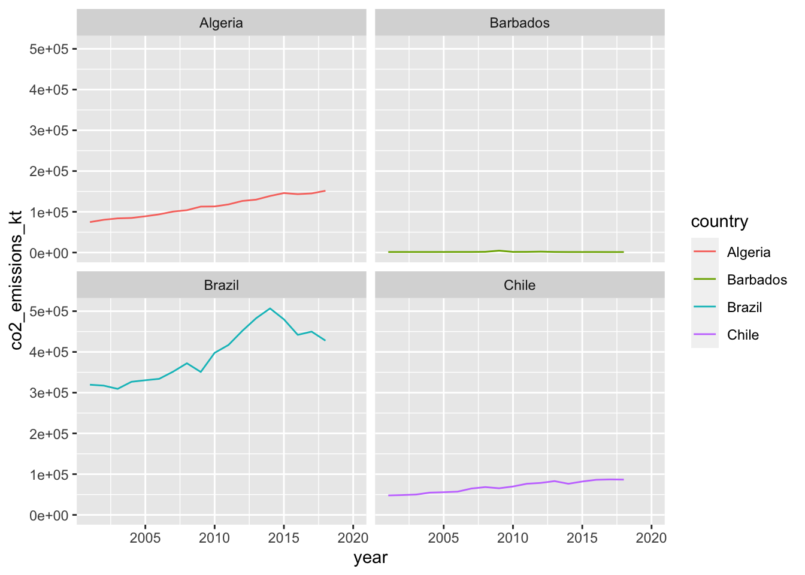

library(janitor)
library(tidyverse)
library(here)Data Wrangling
Read in WB data files
wb_indicators <- read_csv(here("data", "wb_indicators.csv"),
na = c("..", ""))
wb_metadata <- read_csv(here("data",
"wb_indicators_metadata.csv"))Start by gathering the years columns
Use pivot_longer to crunch the years into one column
wb_indicators_long <- wb_indicators |>
pivot_longer(cols = '2001 [YR2001]':'2020 [YR2020]',
names_to = "year", values_to = "indicator_value")
# The new "year" column can't be changed to a numeric as it is nowUse separate to clean up year column to make it numeric
wb_indicators_long2 <- wb_indicators_long |>
separate(col = year,
into = c("year", "year_chr"), sep = " ") |>
select(-year_chr, -'Country Code', -'Series Code') |>
mutate(year = as.numeric(year)) |>
drop_na('Series Name')Use pivot_wider
wb_clean <- wb_indicators_long2 |>
pivot_wider(names_from = 'Series Name', values_from = indicator_value)
# Change the names of the columns manually (names cannot be piped in)
names(wb_clean) <- c("country", "year", "access_clean_fuel_pp", "access_electricity_pp", "co2_emissions_kt", "fossil_fuel_cons_pct", "water_stress")Make a subset and graph it
Facet_wrap is used!! Example below
wb_subset <- wb_clean |>
filter(country %in% c("Brazil", "Algeria", "Barbados", "Chile"))
# Can use unique to see what values for country are in the data
unique(wb_subset$country)[1] "Algeria" "Barbados" "Brazil" "Chile" # Plot
ggplot(data = wb_subset, aes(x = year, y = co2_emissions_kt)) +
geom_line(aes(color = country)) +
facet_wrap(~country)
# ^^ facet_wrap creates separate graphs grouped by a specified group (country in this case)Afternoon wrangling
Example 1: filter the starwars data set to keep only exact matches
ex_1 <- starwars |>
filter(height > 180)ex_2 <- starwars |>
filter(eye_color == "blue")Ex 3: make a subset where homeworld = Naboo
ex_3 <- starwars |>
filter(homeworld == "Naboo")Filter multiple conditions
ex_4 <- starwars |>
filter(height > 180 & homeworld == "Tatooine")ex_5 <- starwars |>
filter(hair_color == "brown" & species == "Human")Filter “or” statement
ex_6 <- starwars |>
filter(height > 180 | eye_color == "yellow")ex_7 <- starwars |>
filter(homeworld == "Endor" | species == "Droid")Writing a different or statement
ex_8 <- starwars |>
filter(eye_color %in% c("blue", "brown", "red"))ex_11 <- starwars |>
filter(homeworld %in% c("Endor", "Tatooine", "Naboo"), height < 150)Filter with negate
ex_12 <-starwars |>
filter(species != "Human")
ex_13 <- starwars |>
filter(!species %in% c("Human", "Droid", "Ewok"))select(): select or exclude columns
# Select by name
ex_14 <- wb_clean |>
select(country, year, co2_emissions_kt)
ex_15 <- wb_clean |>
select(country:co2_emissions_kt)
ex_16 <- wb_clean |>
select(year:fossil_fuel_cons_pct, -access_electricity_pp)ex_17 <- wb_clean |>
filter(country %in% c("Bolivia", "Mexico", "Chile")) |>
select(country:fossil_fuel_cons_pct)Another way to use select
ex_18 <- wb_clean |>
select(year_new = year,
emissions = co2_emissions_kt,
country_name = country)
ex_19 <- wb_clean |>
select(country, year, water_stress) |>
filter(country %in% c("Mexico", "Iceland", "Australia"))